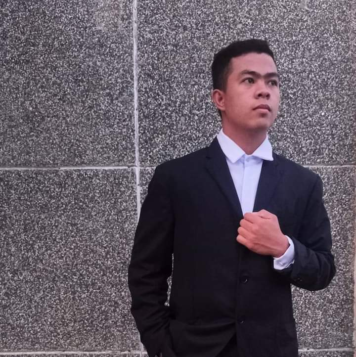

Kyle Salviejo Balanay
Hello, my name is Kyle Salviejo Balanay. I am 19 years old and
I am currently living at Bryg. #22 San Guillermo, San Nicolas, Ilocos Norte.
I am a BSInTech Computer technology student at Mariano Marcos State University College of Industrial Technology.
My Nickname is "Kalbo" I don't know why they called me Kalbo, because I have curly hair so they called me Kalbo?
I don't know, maybe? My mother is a Housewife and my father is a farmer. I have a sister and a brother.
My hobbies is playing basketball and playing different online games after going to school.
My motto in life is "The best way to predict your future, is to create it".
We will not be going successful, if we do not experience how hard life is. I will do my best,
no matter how hard so that I will achieve my desired dreams.